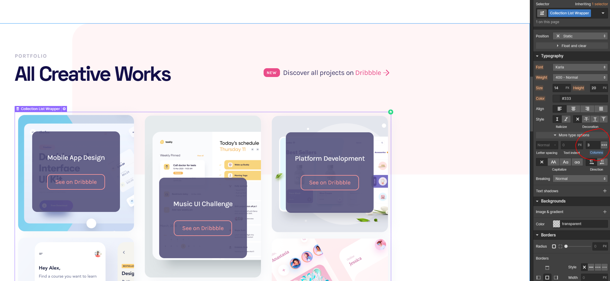

Use this page to get familiar with the basic components of your new template.

The most up-to-date resource for webflow beginners and
experts.
Short and sweet videos to get you familiar with the
product.

Additional free resources, cloneable assets, advanced guides.
Thanks for purchasing Nero!
This page details the most common questions for the template and some tips to help you get started editing it. As always, we recommend reviewing the Webflow University for the most general and up-to-date Webflow guides.
This template includes a style guide which will act as a central hub to maintain general website styles. On this page, you can find the full colour pallette, typography, button styles etc.
When you begin altering the typography, this would be the best place to maintain the editing of global styles.
In order to instantly change all the website typography you can navigate the body-element and apply changes to all body pages. Because the body element is located on every-page by default we can outline some particular styles.
Once you have the body element in focus, you will need to click to the styles on the right side, where you can select to style all body elements. Once this is selected you can simply change the typography styles, base font sizes etc.
In most cases it's better to use the global typography styles rather than classes to style these elements. This means that when we drop a H1 into a page, it contains the exact same styling as all other H1s without the need to provide a specific class.
In order to do this, please select the header type from the styles page, and click the selector dropdown. Inside this dropdown you will be able to select 'All H1 Headings' where you can start applying specific styles for all the H1s. You can repeat this for all heading types.
Similar to the above, in order to maintain a clear and consistent style you can simply select an apply styles to 'All Paragraphs'. We have provided the default styles, but you're welcome to change these to suit your own projects.
Each section of the website should have the class Container applied within it. Containers hold our content and ensure it doesn't expact too far and is consistent on all pages.
We have used a default 'Container' of 1170px, if you choose to change this on the container element, it will apply to all containers used on the site.
Please note, we are using a webflow trick to easily produce the 3 column masonry grid. This is controlled via the typograph column settings. Here you can change the columns, width or remove this effect and use a more standard grid.

For further information, please review the Webflow documentation or reach out to us via template support - flowbase.co/support